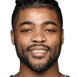

His best final NBA finish was #5 of 30, with the 2019-20 Milwaukee Bucks. In his 103 games for 3 teams over 4 seasons they went 40–63 (38.8%), −23 games under .500, with an average final finish of 18.5.
Jump to: Record by opponent · Season by season · Teammate help
Compare Frank Mason with…
Final NBA finish, season by season
Title Finals Other playoffs Missed playoffs. #1 = champion; the dashed line is last place that season. Each point opens that season's final standings.
All 30 teams ranked in 2019-20, his best finish (#5)Teammate help
 Giannis Antetokounmpo15.01 season
Giannis Antetokounmpo15.01 season Khris Middleton1.01 season
Khris Middleton1.01 season Nikola Vucevic1.01 season
Nikola Vucevic1.01 season
Career
Career records (W–L, W − L, with and without) include 2026-27 games through Nov. 22, 2026; season counts and finishes are through 2025-26. Each card opens its board in the same scope. How we count.

Latest completed seasons
Season by season
Newest first; every header sorts. Final NBA finish is the team's rank among all teams that season (#1 = champion) and opens that season's standings. "Without him" uses the team-season window; the span line counts only the games between his first and last game for the team.
| 2020-21 | #28 of 30 | 21–51 29.2% | Missed playoffs | 4 of 72 | 1–3 25.0% | 20–48 29.4%span: N/A, gap N/A | −4.4 | |
| 2019-20 | #5 of 30 | 56–17 76.7% | Lost conf semis 1–4 | 9 of 73 | 6–3 66.7% | 50–14 78.1%span: 35–11, gap −9.4 | −11.5 | |
| 2018-19 | #17 of 30 | 39–43 47.6% | Missed playoffs | 38 of 82 | 16–22 42.1% | 23–21 52.3%span: 23–21, gap −10.2 | −10.2 | |
| 2017-18 | #24 of 30 | 27–55 32.9% | Missed playoffs | 52 of 82 | 17–35 32.7% | 10–20 33.3%span: 8–18, gap +1.9 | −0.6 |
On/off, starts and close games
From the lineup data, 1996-97 on. On/off is net points per 100 possessions with him on the floor minus off, a different unit from the win-rate gaps. Started and off the bench are team records in those games; close games are those within 5 points in the last 5 minutes with him on the floor.
| 2020-21 | −2.4 | 0–1 0.0% | 1–2 33.3% | N/A | |
| 2019-20 | −14.6 | N/A | 6–3 66.7% | 0–1 0.0% | |
| 2018-19 | −14.2 | N/A | 16–22 42.1% | 1–2 33.3% | |
| 2017-18 | +11.6 | 1–1 50.0% | 16–34 32.0% | 6–7 46.2% |
Teammate help by season
Two separate numbers per season, each with every teammate that adds to it. Help this season = Teammates Score points for honors won that season by teammates who shared a game with him. Help coming in = the same teammates' honors from the season before. How help works.
- 2020-21
 Orlando
Nikola Vucevic All-Star14 g
Orlando
Nikola Vucevic All-Star14 g
Help this season: 1 = 1 Nikola Vucevic
More: help coming in and other teammates
Help coming in (teammates' honors the season before): 0
Other teammates (no honors that season): Khem Birch 4 g, James Ennis 4 g, Terrence Ross 4 g, Chuma Okeke 4 g, Gary Clark 4 g, Dwayne Bacon 4 g, Cole Anthony 3 g, Mo Bamba 2 g, Evan Fournier 1 g, Al-Farouq Aminu 1 g
- 2019-20
 Milwaukee
Giannis Antetokounmpo MVPDPOYAll-NBA 1stAll-StarAll-Def 1st157 gKhris Middleton All-Star17 g
Milwaukee
Giannis Antetokounmpo MVPDPOYAll-NBA 1stAll-StarAll-Def 1st157 gKhris Middleton All-Star17 g Brook Lopez All-Def 2nd0.56 g
Brook Lopez All-Def 2nd0.56 g Eric Bledsoe All-Def 2nd0.55 g
Eric Bledsoe All-Def 2nd0.55 g
Help this season: 17 = 15 Giannis Antetokounmpo + 1 Khris Middleton + 0.5 Brook Lopez + 0.5 Eric Bledsoe
More: help coming in and other teammates
Help coming in (teammates' honors the season before): 14 = 12 Giannis Antetokounmpo + 1 Khris Middleton + 1 Eric Bledsoe
Other teammates (no honors that season): Robin Lopez 9 g, Pat Connaughton 9 g, Kyle Korver 7 g, Donte DiVincenzo 7 g, DJ Wilson 7 g, Ersan Ilyasova 7 g, Wesley Matthews 6 g, George Hill 6 g, Sterling Brown 6 g, Thanasis Antetokounmpo 4 g, Marvin Williams 3 g, Dragan Bender 1 g
- 2018-19
 Sacramento
Sacramento
 Marvin Bagley All-Rookie 1st0.2534 g
Marvin Bagley All-Rookie 1st0.2534 g
Help this season: 0.25 = 0.25 Marvin Bagley
More: help coming in and other teammates
Help coming in (teammates' honors the season before): 0.125 = 0.125 Bogdan Bogdanovic
Other teammates (no honors that season): Buddy Hield 38 g, Nemanja Bjelica 37 g, De'Aaron Fox 37 g, Willie Cauley-Stein 37 g, Justin Jackson 32 g, Harry Giles 29 g, Yogi Ferrell 29 g, Bogdan Bogdanovic 27 g, Iman Shumpert 25 g, Kosta Koufos 21 g, Troy Williams 18 g, Ben McLemore 14 g, Skal Labissiere 12 g, Harrison Barnes 4 g and 4 more
- 2017-18Sacramento
 Bogdan Bogdanovic All-Rookie 2nd0.12550 g
Bogdan Bogdanovic All-Rookie 2nd0.12550 g
Help this season: 0.125 = 0.125 Bogdan Bogdanovic
More: help coming in and other teammates
Help coming in (teammates' honors the season before): 0.25 = 0.25 Buddy Hield
Other teammates (no honors that season): Buddy Hield 50 g, Kosta Koufos 45 g, Willie Cauley-Stein 45 g, De'Aaron Fox 43 g, Justin Jackson 42 g, Skal Labissiere 42 g, Garrett Temple 40 g, Zach Randolph 37 g, Vince Carter 35 g, George Hill 25 g, Malachi Richardson 16 g, JaKarr Sampson 13 g, Bruno Caboclo 9 g, Georgios Papagiannis 7 g and 2 more
Record against each opponent
Regular season, through 2025-26 (2026-27 games not included): 103 games, 40–63, against 29 franchises.
Grouped by franchise (named as today); game lists keep each team's name that season. Filters and the tab are kept in the URL, so a filtered view can be shared.
| Games list | |||||||
|---|---|---|---|---|---|---|---|
| 6 | 1–5 | 16.7% | −4 | N/A | 2017-18 to 2018-19 | ||
| 5 | 4–1 | 80.0% | +3 | N/A | 2017-18 to 2020-21 | ||
| 5 | 4–1 | 80.0% | +3 | N/A | 2017-18 to 2019-20 | ||
| 5 | 0–5 | 0.0% | −5 | N/A | 2017-18 to 2019-20 | ||
| 5 | 2–3 | 40.0% | −1 | N/A | 2017-18 to 2020-21 | ||
| 5 | 2–3 | 40.0% | −1 | N/A | 2017-18 to 2019-20 | ||
| 5 | 2–3 | 40.0% | −1 | N/A | 2017-18 to 2019-20 | ||
| 5 | 1–4 | 20.0% | −3 | N/A | 2017-18 to 2020-21 | ||
| 4 | 3–1 | 75.0% | +2 | N/A | 2017-18 to 2018-19 | ||
| 4 | 2–2 | 50.0% | 0 | N/A | 2017-18 to 2019-20 | ||
| 4 | 0–4 | 0.0% | −4 | N/A | 2017-18 to 2018-19 | ||
| 4 | 2–2 | 50.0% | 0 | N/A | 2017-18 to 2018-19 | ||
| 4 | 1–3 | 25.0% | −2 | N/A | 2017-18 to 2018-19 | ||
| 4 | 1–3 | 25.0% | −2 | N/A | 2017-18 to 2018-19 | ||
| 4 | 2–2 | 50.0% | 0 | N/A | 2017-18 to 2018-19 | ||
| 4 | 0–4 | 0.0% | −4 | N/A | 2017-18 to 2018-19 | ||
| DetroitMost-faced: Andre Drummond (3 games) · Head-to-Head | 3 | 1–2 | 33.3% | −1 | N/A | 2017-18 to 2018-19 | |
| 3 | 0–3 | 0.0% | −3 | N/A | 2018-19 | ||
| 3 | 0–3 | 0.0% | −3 | N/A | 2017-18 to 2018-19 | ||
| 3 | 1–2 | 33.3% | −1 | N/A | 2017-18 to 2018-19 | ||
| 3 | 3–0 | 100.0% | +3 | 1–0 (0–1 in games) | 2017-18 to 2018-19 | ||
| 3 | 2–1 | 66.7% | +1 | N/A | 2017-18 to 2019-20 | ||
| 2 | 0–2 | 0.0% | −2 | N/A | 2017-18 | ||
| 2 | 1–1 | 50.0% | 0 | N/A | 2018-19 to 2019-20 | ||
| 2 | 2–0 | 100.0% | +2 | 0–1 (0–1 in games) | 2017-18 to 2018-19 | ||
| 2 | 1–1 | 50.0% | 0 | N/A | 2017-18 | ||
| 2 | 1–1 | 50.0% | 0 | N/A | 2017-18 to 2018-19 | ||
| 1 | 0–1 | 0.0% | −1 | N/A | 2017-18 | ||
| 1 | 1–0 | 100.0% | +1 | N/A | 2017-18 |
Rows add up to his career record in his games. A playoff series counts when he played in it; early round-robin games show as games only. How we count.
Playoffs, with and without him
Arrival and departure
Team wins per 82 games the season before he arrived vs his first season there, and his last season vs the season after he left. He leaves a team only when his next season with games is for another team (or he never plays again); whole seasons he missed and came back from are one "Missed" row with the team's record without him. Per 82 so short seasons compare fairly. These are team records, not a measure of what he did.
| Left | after 2020-21 | 2020-21: 21–51 23.9 per 82 | 2021-22: 22–60 22.0 per 82 without him | −1.9 wins | |
| Arrived | 2020-21 | 2019-20: 33–40 37.1 per 82 | 2020-21: 21–51 23.9 per 82 | −13.2 wins | |
| Left | after 2019-20 | 2019-20: 56–17 62.9 per 82 | 2020-21: 46–26 52.4 per 82 without him | −10.5 wins | |
| Arrived | 2019-20 | 2018-19: 60–22 60.0 per 82 | 2019-20: 56–17 62.9 per 82 | +2.9 wins | |
| Left | after 2018-19 | 2018-19: 39–43 39.0 per 82 | 2019-20: 31–41 35.3 per 82 without him | −3.7 wins | |
| Debut | 2017-18 | 2016-17: 32–50 32.0 per 82 | 2017-18: 27–55 27.0 per 82 | −5.0 wins |
Best duos
Team record in regular-season games both played, top 10 by win %, at least 50 games together.
 Buddy Hield
33–55 37.5%
Buddy Hield
33–55 37.5% De'Aaron Fox
30–50 37.5%
De'Aaron Fox
30–50 37.5% Willie Cauley-Stein
30–52 36.6%
Willie Cauley-Stein
30–52 36.6%- Justin Jackson 27–47 36.5%
 Kosta Koufos
24–42 36.4%
Kosta Koufos
24–42 36.4%- Bogdan Bogdanovic
27–50 35.1%
 Skal Labissiere
16–38 29.6%
Skal Labissiere
16–38 29.6%
With and without his teammates
His 12 teammates with the most regular-season games together. "Together" is the team's record in the games both played for it; "Without him" is the team's record in the games Frank Mason played for that team while the teammate was on it (between the teammate's first and last game for the team, the appearance span) and the teammate did not play. Fewer than 20 games without him: no gap. Games through Nov. 22, 2026. How we count.
- Buddy HieldSacramento 2017-18 to 2018-19
- Together
- 33–55 37.5%
- Without him
- 0–2 0.0%
- Gap
- Too few games without him
- Willie Cauley-SteinSacramento 2017-18 to 2018-19
- Together
- 30–52 36.6%
- Without him
- 3–5 37.5%
- Gap
- Too few games without him
- De'Aaron FoxSacramento 2017-18 to 2018-19
- Together
- 30–50 37.5%
- Without him
- 3–7 30.0%
- Gap
- Too few games without him
- Bogdan BogdanovicSacramento 2017-18 to 2018-19
- Together
- 27–50 35.1%
- Without him
- 1–2 33.3%
- Gap
- Too few games without him
- Justin JacksonSacramento 2017-18 to 2018-19
- Together
- 27–47 36.5%
- Without him
- 5–6 45.5%
- Gap
- Too few games without him
- Kosta KoufosSacramento 2017-18 to 2018-19
- Together
- 24–42 36.4%
- Without him
- 5–9 35.7%
- Gap
- Too few games without him
- Skal LabissiereSacramento 2017-18 to 2018-19
- Together
- 16–38 29.6%
- Without him
- 15–14 51.7%
- Gap
- 22.1 points higher
 Garrett TempleSacramento 2017-18
Garrett TempleSacramento 2017-18- Together
- 14–26 35.0%
- Without him
- 0–4 0.0%
- Gap
- Too few games without him
 Nemanja BjelicaSacramento 2018-19
Nemanja BjelicaSacramento 2018-19- Together
- 16–21 43.2%
- Without him
- 0–1 0.0%
- Gap
- Too few games without him
 Zach RandolphSacramento 2017-18
Zach RandolphSacramento 2017-18- Together
- 11–26 29.7%
- Without him
- 3–4 42.9%
- Gap
- Too few games without him
 Vince CarterSacramento 2017-18
Vince CarterSacramento 2017-18- Together
- 12–23 34.3%
- Without him
- 5–12 29.4%
- Gap
- Too few games without him
- Marvin BagleySacramento 2018-19
- Together
- 15–19 44.1%
- Without him
- 1–3 25.0%
- Gap
- Too few games without him